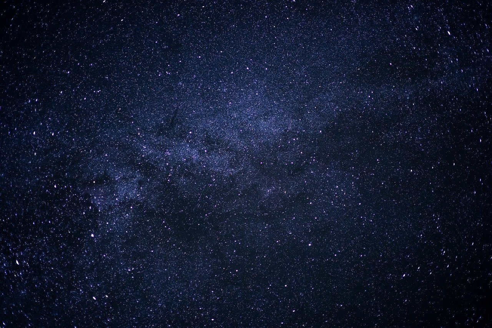
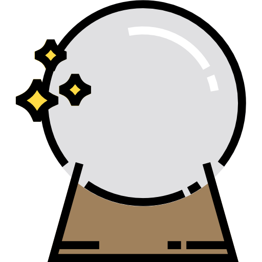

O espaço sideral é a imensidão onde o tempo se dobra e a matéria ganha forma em estrelas, galáxias e mundos ainda desconhecidos. Cada ponto luminoso no céu carrega histórias antigas, revelando que o universo está em constante movimento e expansão.
A realidade, vista pela astronomia, mostra que somos parte desse grande tecido cósmico. A mesma matéria que brilha nas estrelas compõe nossa existência, conectando humanidade e cosmos em uma mesma origem.